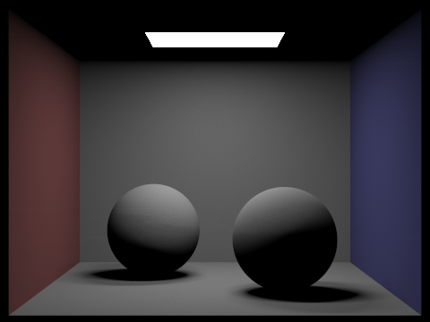

Ethan Weber | CS184/284a Class | Assignment 3-1
Note the use of "we" is used "I", as I do not have a partner on this
project. Also, images are higher resolution but rescaled with HTML for display convenience.
The goals of your write-up are for you to (1) think about and articulate
what you have built and learned in your own words and (2) have a write-up
of the project to take away from the class. Your write-up should include
the following:
-
An overview of the project, including your approach to
and implementation for each of the parts, as well as what problems you
have encountered and how you solved them. Strive for clarity and
succinctness.
-
For each part, make sure to include the results described in the
corresponding Deliverables section, in addition to your explanation.
If you failed to generate any results correctly, provide a brief
explanation on why.
-
Clearly indicate any extra credit items you have completed; and provide
a thorough explanation and illustration for each of them.
-
At the end, if you worked with a partner, please write a short paragraph
together for your final report that describes how you collaborated, how
it went, and what you learned.
The write-up is one of our main methods to evaluate your work, so it is
important to spend the time to do it correctly and thoroughly. Plan ahead
to allocate time for the write-up well before the deadline.
Technical details: Do not convert or resize your
.png. files. Use either the windowless rendering mode or use the
S key to save screenshots in GUI. Do not use
the built-in screenshot utility of your OS. Keep your images in the
docs/images/ subdirectory. We recommend using the
-r 480 360 command line flag to set resolution at 480 by 360
for all your screenshots.
Overview
In this project, there we implemented a raytracing pipeline to process
COLLADA files (i.e., .dae files). These files describe a scene graph of
objects--namely meshes, cameras, lights, etc.
-
First, the project starts with ray generation and scene intersection.
Given a camera, we generate rays for each pixel in the world space. We
also implement ray-triangle and ray-sphere intersections to handle some
geometries for later processing.
-
Next, we speed up ray tracing by using BVH trees, or Bounding Volume
Hierarchy trees. I construct these by splitting based on the average
centroid, where the axis is chosen based on the longest edge of the enclosing box.
-
Next, we implement direct illumination with zero-bounce and one-bounce
illumination--with uniform hemisphere sampling and importance sampling
of the lights.
-
Next, we implement global illumination with recursive code to continue
bouncing rays and accumulating radiance until some termination
criteria--either maximum number of bounces or with the Russian Roulette
procedure.
-
Finally, we implement adaptive sampling to terminate samples per pixel
when the pixel value is within some confidence interval.
Deliverables
Part 1
-
Walk through the ray generation and primitive intersection parts of the
rendering pipeline.
-
Explain the triangle intersection algorithm you implemented in your own
words.
-
Show images with normal shading for a few small .dae files.
Ray generation. Ray generation is computed with the "generate_ray" function. Given a normalized x, y position in image space, the function will map that value into a ray where the camera is at some origin and the camera ray is shooting through the x, y position but at the plane where z = -1. This transformed coordinate space is called the camera space. Rays consist of two components: the ray origin and the ray direction. The ray origin is simply the position of the camera. The ray direction is the unit vector of the ray that shoots through the x, y position BUT in the world space, meaning we first have to construct the ray direction and then transform it with the c2w (i.e., camera to world) transform.
Primitive intersections. In this section, we implemented both ray-triangle and ray-sphere intersections. Given a ray, the task is to find the time t that the ray intersects with the primitive if the ray indeed does intersect with the primitive. This requires multiple gemoetry checks and depends on the primitive being used.
Triangle intersection algorithm. I used the Moller Trumbore intersection algorithm for ray-triangle intersections, which was described in Lecture 9 Slide 23. This algorithm takes a ray and 3 points, and it solves for the time of intersection and the barycentric coordinates of the triangle. Furthermore, its cost is only 1 division, 27 multiplications, and 17 additions, making it quite efficient. After computing the time and barycentric coordinates, I make sure that the time is within the specified min and max time for the ray. Then, I check if the barycentric coordinates are valid. If so, I update the max time (max_t) and set it as the solved for time t. I also set the normal of the triangle by weighting the normals at vertices with the barycentric coordinates as weights.
Note that the ray-sphere intersection algorithm is even simpler but has a similar flavor to the ray-triangle algorithm.
Below we show multiple images with normal shading coming from different .dae files:


Part 2
-
Walk through your BVH construction algorithm. Explain the heuristic you
chose for picking the splitting point.
-
Show images with normal shading for a few large .dae files that
you can only render with BVH acceleration.
-
Compare rendering times on a few scenes with moderately complex
geometries with and without BVH acceleration. Present your results in a
one-paragraph analysis.
The BVH construction algorithm takes place in "construct_bvh". First, it computes the bounding box from a list of all primitives passed into the function (i.e., from the root node). While doing this, I also compute the average centroid by summing all the centroid of each primitive and dividing by the number of primitives. This is used later for splitting the box depending on termination criteria. Before possibly splitting, the code checks to see if the number of primitives at the current node is less than or equal to the max_leaf_size. If so, the node-start and node-end pointers are set to the start and end iterators. The left and right children are set to NULL, and the node is returned.
If the termination criteria is not reached, then the node is recursively split into children nodes. Specifically, we choose to split in the dimension where the bounding box (described above) is has its longest edge. Then, we take the midpoint value as the average centroid in this axis. Finally, we iterate over all the primities and sort the iterators such that are split into left and right subsets. For this, we have to be very careful to sort the iterators instead of writing new values to the stack which will be deleted once the function call returns (resulting in bad access errors). After doing this management, we can call "construct_bvh" for both the left and right children and return the node.
Here are images and speedups for a few large .dae files. Every .dae file would work with enough time, so the second bullet point doesn't make sense. These speedups should suffice to show that the algorithm works properly.
- cow.dae went from 2.3883 to 0.0025 seconds.
- maxplanck.dae went from 21.6256 to 0.0555 seconds.
- part2_CBlucy.dae went from 21.6256 to 0.0284 seconds.
- dragon.dae went from 35.8979 to 0.0281 seconds.


Part 3
-
Walk through both implementations of the direct lighting function.
-
Show some images rendered with both implementations of the direct
lighting function.
-
Focus on one particular scene with at least one area light and compare
the noise levels in soft shadows when rendering with 1, 4, 16, and 64
light rays (the
-l flag) and with 1 sample per pixel (the
-s flag) using light sampling, not uniform
hemisphere sampling.
-
Compare the results between uniform hemisphere sampling and lighting
sampling in a one-paragraph analysis.
Note that the objects that look completely black are okay! This is because they do not use diffuse BSDFs. The assignment made it clear that this is fine.
In this section, we implemented two ways to do direct lighting: (1) with uniform hemisphere sampling and (2) with importance sampling the lights. Here I show top top row of images using (1) uniform hemisphere sampling and the bottom row with (2) importance sampling. Note that the columns correspond to the same camera and scene. You can check the image names for more details as to which .dae files were used. Notice that the top right dragon image is a black image. This is because uniform sampling used and the probability of hitting the point light source is nearly zero!
(1) Uniform hemisphere sampling images:

(2) Importance sampling images:
(1) Uniform hemisphere sampling is implemented with the function "estimate_direct_lighting_hemisphere". The idea is to use a specified number of samples per light and shoot rays from intersecting points in the scene to see if they hit light sources. If so, the radiance is used with the surface BSDF in order to accumulate radiance to create a color to show. Lecture 13 Slide 26 has relevant pseudocode for this function. We check for intersection with lights by doing an BVH intersection and then use the bsdf to call "get_emission" which will be nonzero for light source. Then, we accumulate the emission times the bsdf function for the angle out and in with some other weighting terms like costheta and pdf, which is 1 / (2 PI). We normalize by the number of samples. Please see the code for additional details.
(1) Importance sampling is implemented with the function "estimate_direct_lighting_importance". It is similar to the previous function but instead of using uniform hemisphere sampling, samples are chosen directly from the light sources. This works for both point light sources (i.e., delta lights) or area lights, in which case the number of samples are used to average the accumulated radiance like in the other function. Please see the code for more details.
We note that the lighting looks a little different or darker than the reference implementation, but I don't think this means there is any area or any big error in the code. If anything, maybe a normalization constant is off in the importance sampling code?
Next, we focus on one particular scene: the Cornell Box with the bunny. It has at least one area light source. From left to right, we show 1, 4, 16, and 64 light rays (i.e., samples per light) with one sample per pixel. Notice how the noise goes down quite a bit as we use more and more light samples! Pretty cool. Note this is NOT using uniform sampling!
For a comparison of results, we note that uniform hemisphere sampling works quite well when there are large area light sources in the scene. However, when using point light sources, importance sampling is needed otherwise the rendered image will be completely useless. Importance sampling should typically be more useful because it gaurantees that the rays sampled will be relevant because we already know where the lights are. However, it comes at an additional implementation overhead of writing the code to do this properly. Uniform hemisphere sampling has an advantage of being simple and straightforward.
Part 4
-
Walk through your implementation of the indirect lighting function.
-
Show some images rendered with global (direct and indirect)
illumination. Use 1024 samples per pixel.
-
Pick one scene and compare rendered views first with
only direct illumination, then
only indirect illumination. Use 1024 samples per pixel.
(You will have to edit
PathTracer::at_least_one_bounce_radiance(...) in your code
to generate these views.)
-
For CBbunny.dae, compare rendered views with
max_ray_depth set to 0, 1, 2, 3, and 100 (the
-m flag). Use 1024 samples per pixel.
-
Pick one scene and compare rendered views with various sample-per-pixel
rates, including at least 1, 2, 4, 8, 16, 64, and 1024. Use 4 light
rays.
The indirect lighting function takes place with the code "at_least_one_bounce_radiance", which is recursive. The color of a ray will be the output of "zero_bounce_radiance" + "at_least_one_bounce_radiance". "at_least_one_bounce_radiance" first makes a call to one_bounce_radiance and then it computes a continuation probability to see whether or not the algorithm should go on. This is using the Russian Roulette algorithm. If it's the first ray (i.e., its depth is set to max_ray_depth) then continuation probability will be 1. Otherwise, it will be set to 0.65. Otherwise, is will terminated if it's already bounded the maximum number of times. We then check to see if the ray, computed based on the BSDF sample, will intersect another object. If so, we continue and add the accumulated radiance to the color. Of course, we use many normalization constants including costheta and pdf and the continuation probability, much like before! Please see code for details.
Here are some images with global (direct + indirect) illumination with 1024 samples per pixel. Note that the commands take the form "./pathtracer -t 8 -s 1024 -l 16 -m 5 -r 480 360 -f part4_global_bunny.png ../dae/sky/CBbunny.dae", for reference on what parameters were used as input to the function.
Now we pick one scene, the CBspheres_lambertian.dae file. The left is only direct illumination. The right is only indifferent illumination. It's a little tricky to implement, so you can see (possibly commented out) code for details.

For CBbunny.dae, here we show rendered views with max_ray_depth going from left to right as 0, 1, 2, 3, and 100. We use 1024 samples per pixel. (Ignore that the filenames have the term "spheres" in them.) FOr these we use 4 light rays.
For "CBbunny.dae", we also pick this scene and compare rendered views with various samples-per-pixel rates. Namely, we use 4 light rays. From left to right is with 1, 2, 4, 8, 16, 64, and 1024 samples per pixel. Notice the quality improves the further to the right!


Part 5
- Walk through your implementation of the adaptive sampling.
-
Pick one scene and render it with at least 2048 samples per pixel. Show
a good sampling rate image with clearly visible differences in sampling
rate over various regions and pixels. Include both your sample rate
image, which shows your how your adaptive sampling changes depending on
which part of the image you are rendering, and your noise-free rendered
result. Use 1 sample per light and at least 5 for max ray depth.
For adaptive sampling, we simply followed the instructions of part 5 where we have a condifence threshold that we terminate with depending on the statistics of the sample for a given pixel. Below we show the CBbunny.dae scene where we use adaptive sampling. Here we use the command "./pathtracer -t 8 -s 2048 -a 64 0.05 -l 1 -m 5 -r 480 360 -f part5_adaptive.png ../dae/sky/CBbunny.dae" which has a max ray depth of 5 and 1 sample per light. See the code in "raytrace_pixel" for how the adaptive sampling is implemented. We keep a running average of the illumination of a pixel and a running average if the illumination squared. This allows us to compute the mean and variance every samplersPerBatch and then decide whether to terminate sampling for that pixel or not.
Left is the rendering result and right is the adaptive sampling result.
We notice that the right image of the rate indicating the number of used samples doesn't look very correct. Our code should be exactly like the described implementation, and I'm not quite sure why the result is not identical to the solution. Please have a look for yourself. Here is the code for reference. We are very careful about doing things properly, so hopefully the fact that the image doesn't look the same will not affect the grade negatively. Thanks.
Random Thoughts / Questions
Here are some questions I had while doing the assignement.
For Part 2, what if the ray starts within the bounding box? Does this have to be handled in some specific way?